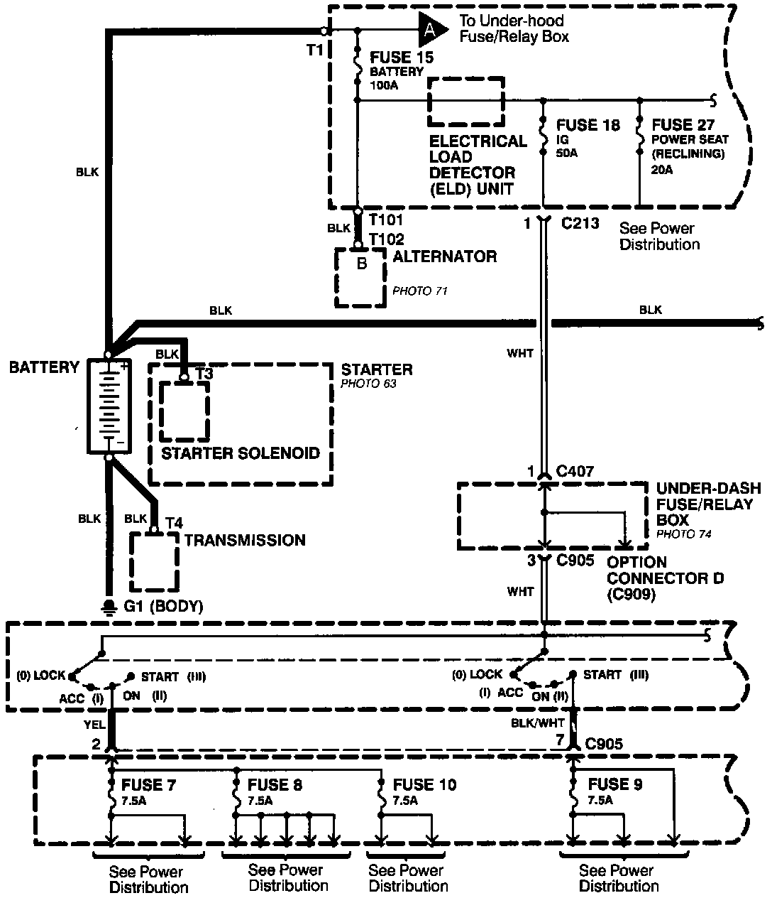
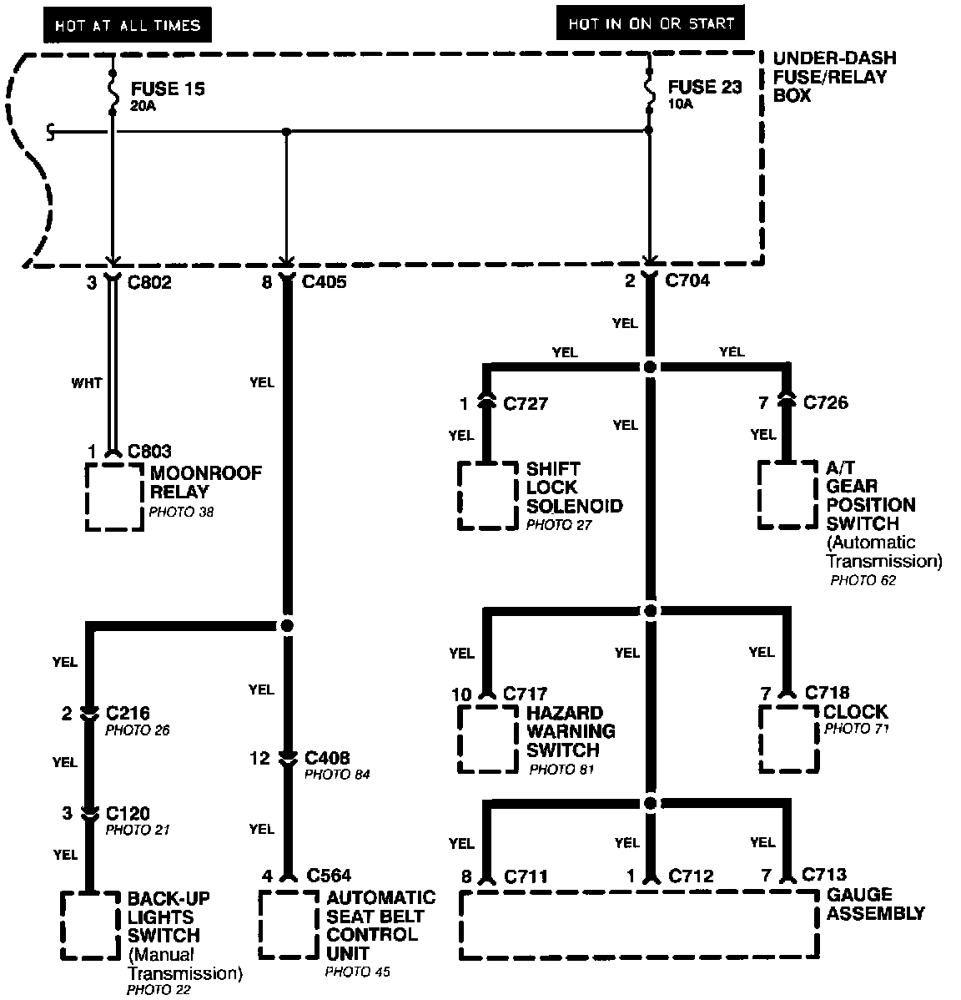

Power Distribution Schematics
Power Distribution schematics show how power is supplied from the positive battery terminal to various circuits in the car. Refer to the Power Distribution section to get a more detailed picture of how power is supplied to the circuit you're working on.Power Distribution Schematics-From Battery To Ignition Switch, Fuses,and Relays:

From Battery to Ignition Switch, Fuses, and Relays
Individual circuit schematics begin with a fuse. The first half of Power Distribution, however, shows the wiring "upstream" between the battery and the fuses.

From Fuses to Relays and Components
The second half of Power Distribution shows the wiring "From Fuses to Relays and Components." This can speed your troubleshooting by showing which circuits share fuses. If Power Distribution shows that an inoperative circuit and another circuit share a fuse, check a component in the other circuit. If it works, you know the fuse is good and power is available to the inoperative circuit.